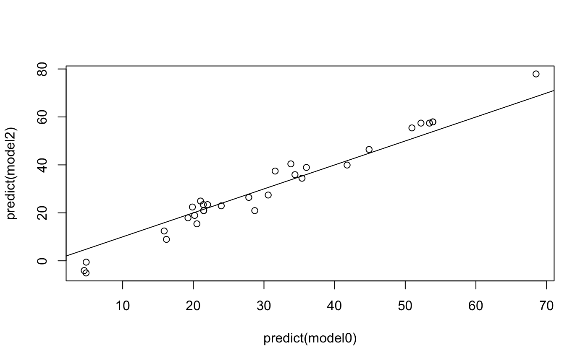

Refits a model with a specified set of coefficients.
fix.coef(model, beta = NULL)
| model | An R model, e.g., produced by |
|---|---|
| beta | A numeric vector with |
An updated R model object
The function calculates the linear predictor using the new coefficients,
and reformulates the model using the offset
argument. The linear predictor is called
offset, and its coefficient will be 1 by definition.
The new model only fits the intercept, which should be 0
if we set beta = coef(model).
Stef van Buuren, 2018
model0 <- lm(Volume ~ Girth + Height, data = trees) formula(model0) #> Volume ~ Girth + Height #> <environment: 0x7fd75c704520> coef(model0) #> (Intercept) Girth Height #> -57.9876589 4.7081605 0.3392512 deviance(model0) #> [1] 421.9214 # refit same model model1 <- fix.coef(model0) formula(model1) #> Volume ~ 1 #> <environment: 0x7fd75c704520> coef(model1) #> (Intercept) #> 3.988039e-14 deviance(model1) #> [1] 421.9214 # change the beta's model2 <- fix.coef(model0, beta = c(-50, 5, 1)) coef(model2) #> (Intercept) #> -62.07097 deviance(model2) #> [1] 1098.984 # compare predictions plot(predict(model0), predict(model1)) abline(0, 1) plot(predict(model0), predict(model2)) abline(0, 1)  # compare proportion explained variance cor(predict(model0), predict(model0) + residuals(model0))^2 #> [1] 0.94795 cor(predict(model1), predict(model1) + residuals(model1))^2 #> [1] 0.94795 cor(predict(model2), predict(model2) + residuals(model2))^2 #> [1] 0.9228528 # extract offset from constrained model summary(model2$offset) #> Min. 1st Qu. Median Mean 3rd Qu. Max. #> 57.00 82.00 87.00 92.24 102.25 140.00 # it also works with factors and missing data model0 <- lm(bmi ~ age + hyp + chl, data = nhanes2) model1 <- fix.coef(model0) model2 <- fix.coef(model0, beta = c(15, -8, -8, 2, 0.2))